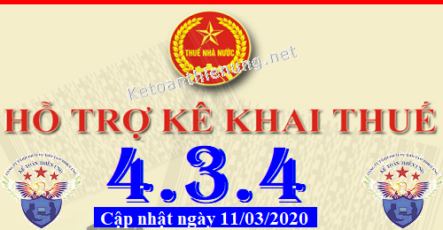
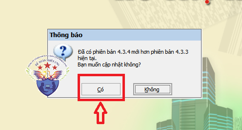
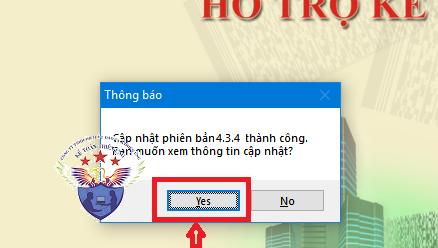

Phần mềm hỗ trợ kê khai thuế HTKK 4.3.4 mới nhất 2020 là Phần mềm HTKK 4.3.4 mới nhất ngày 11/03/2020 của Tổng cục thuế. Download phần mềm HTKK 4.3.4 miễn phí tại đây.
Ngày 11/03/2020 Tổng cục Thuế thông báo về việc Nâng cấp ứng dụng Hỗ trợ kê khai (HTKK) 4.3.4
TỔNG CỤC THUẾ THÔNG BÁO
V/v Nâng cấp ứng dụng Hỗ trợ kê khai (HTKK) phiên bản 4.3.4 đáp ứng việc sắp xếp các đơn vị hành chính cấp huyên, cấp xã
- Tổng cục Thuế thông báo nâng cấp ứng dụng Hỗ trợ kê khai (HTKK) phiên bản 4.3.4 đáp ứng việc sắp xếp các đơn vị hành chính cấp huyện, cấp xã đáp ứng Nghị quyết số 892/NQ-UBTVQH14, Nghị quyết số 893/NQ-UBTVQH14, Nghị quyết số 894/NQ-UBTVQH14, Nghị quyết số 895/NQ-UBTVQH14, Nghị quyết số 896/NQ-UBTVQH14, Nghị quyết số 897/NQ-UBTVQH14 ngày 11/02/2020 của Ủy ban Thường vụ Quốc hội về việc sắp xếp các đơn vị hành chính cấp huyện, cấp xã thuộc các tỉnh/thành phố Thái Bình, Cần Thơ, Khánh Hòa, Hà Nội, Lào Cai, Cao Bằng đồng thời cập nhật một số nội dung phát sinh sau khi triển khai phiên bản HTKK 4.3.3, cụ thể như sau:
1. Cập nhật địa bàn hành chính cấp huyện, cấp xã
- Cập nhật địa bàn hành chính cấp huyện, cấp xã trực thuộc tỉnh Thái Bình đáp ứng Nghị quyết số 892/NQ-UBTVQH14
- Cập nhật địa bàn hành chính cấp huyện, cấp xã trực thuộc Thành phố Cần Thơ đáp ứng Nghị quyết số 893/NQ-UBTVQH14
- Cập nhật địa bàn hành chính cấp huyện, cấp xã trực thuộc tỉnh Khánh Hòa đáp ứng Nghị quyết số 894/NQ-UBTVQH14
- Cập nhật địa bàn hành chính cấp huyện, cấp xã trực thuộc Thành phố Hà Nội đáp ứng Nghị quyết số 895/NQ-UBTVQH14
- Cập nhật địa bàn hành chính cấp huyện, cấp xã trực thuộc tỉnh Lào Cai đáp ứng Nghị quyết số 896/NQ-UBTVQH14
- Cập nhật địa bàn hành chính cấp huyện, cấp xã trực thuộc tỉnh Cao Bằng đáp ứng Nghị quyết số 897/NQ-UBTVQH14
2.Cập nhật công thức tính tại Bảng cân đối tài khoản của các bộ báo cáo tài chính đáp ứng Thông tư số 24/2017/TT-BTC
2.1. Thay đổi công thức hỗ trợ tính đối với Số dư cuối kỳ của các tài khoản lưỡng tính cấp con, cho phép sửa.
- Nâng cấp sửa đổi công thức:
+ Số dư cuối kỳ bên Nợ = (1)+(3)-(4)-(2), nếu dương thì hiển thị, nếu âm thì không hiển thị, cho phép sửa.
+ Số dư cuối kỳ bên Có = (2)+(4)-(3)-(1), nếu dương thì hiển thị, nếu âm thì không hiển thị, cho phép sửa.
- Phạm vi:
+ Bộ 24/2017/TT/BTC, bảng cân đối tài khoản: 131, 138, 331, 3331, 3334, 3338, 334, 335, 338, 421
+ Bộ 24/2017/TT-BTC (bổ sung mẫu B01a của Thông tư 133), bảng cân đối tài khoản: 131, 1381, 1386, 1388, 331, 33311, 33312, 3332, 3333, 3334, 3335, 3336, 3337, 33381, 33382, 3339, 334, 3381, 3382, 3383, 3384, 3385, 3386, 3387, 3388, 4211, 4212.
+ Bộ 24/2017/TT-BTC (bổ sung mẫu B01b của Thông tư 133), bảng cân đối tài khoản: 131, 1381, 1386, 1388, 331, 33311, 33312, 3332, 3333, 3334, 3335, 3336, 3337, 33381, 33382, 3339, 334, 3381, 3382, 3383, 3384, 3385, 3386, 3387, 3388, 4211, 4212.
2.2. Thay đổi công thức đối với dòng tổng của các tài khoản lưỡng tính cấp cha có cấp con
- Nâng cấp sửa đổi công thức:
+ Số dư cuối kỳ bên Nợ của TK cấp cha = Tổng dư Nợ CK (Tổng của các TK cấp con) - Tổng Dư Có CK (Tổng của các TK cấp con) nếu >=0, nếu âm thì ko hiển thị
+ Số dư cuối kỳ bên Có của TK cấp cha = Tổng Dư Có CK (Tổng của các TK cấp con) - Tổng Dư Nợ CK (Tổng của các TK cấp con) nếu >=0, nếu âm thì ko hiển thị
- Phạm vi:
+ Bộ 24/2017/TT/BTC, bảng cân đối tài khoản: 333
+ Bộ 24/2017/TT-BTC (bổ sung mẫu B01a của Thông tư 133), bảng cân đối tài khoản: 138, 333, 3331, 3338, 338, 421.
+ Bộ 24/2017/TT-BTC (bổ sung mẫu B01b của Thông tư 133), bảng cân đối tài khoản: 138, 333, 3331, 3338, 338, 421.
------------------------------------------------------------------------
Bắt đầu từ ngày 12/03/2020, khi lập hồ sơ khai thuế có liên quan đến nội dung nâng cấp nêu trên, tổ chức, cá nhân nộp thuế sẽ sử dụng các chức năng kê khai tại ứng dụng HTKK 4.3.4 thay cho các phiên bản trước đây.

----------------------------------------------------------------------
Download Phần mềm HTKK 4.3.4 tại đây:

Để cài đặt được HTKK 4.3.4, máy tính của NNT cần đáp ứng thông số sau:
- Hệ điều hành WinXP (SP2, SP3), Win 7 trở lên… (không hỗ trợ hệ điều hành iOS, Mac).
- Máy tính có cài .NET Framework 3.5 trở lên (có thể tải bộ cài .NET Framework 3.5 tại đây).
- Nếu máy tính sử dụng hệ điều hành Win 7 trở lên không phải cài đặt .NET Framework 3.5 mà chỉ cần kích hoạt .NET Framework 3.5 đã tích hợp sẵn theo tài liệu hướng dẫn cài đặt tại đây
- Hệ điều hành WinXP (SP2, SP3), Win 7 trở lên… (không hỗ trợ hệ điều hành iOS, Mac).
- Máy tính có cài .NET Framework 3.5 trở lên (có thể tải bộ cài .NET Framework 3.5 tại đây).
- Nếu máy tính sử dụng hệ điều hành Win 7 trở lên không phải cài đặt .NET Framework 3.5 mà chỉ cần kích hoạt .NET Framework 3.5 đã tích hợp sẵn theo tài liệu hướng dẫn cài đặt tại đây
-----------------------------------------------------------------------------------------------
- Mọi phản ánh, góp ý của tổ chức, cá nhân nộp thuế được gửi đến cơ quan Thuế theo các số điện thoại, hộp thư điện tử hỗ trợ NNT về ứng dụng HTKK do cơ quan Thuế cung cấp.
Tổng cục Thuế trân trọng thông báo./.
-----------------------------------------------------------------------
Trường hợp: Máy tính các bạn đã cài phần mềm HTKK 4.3.3 rồi -> Các bạn chỉ cần Bật phần mềm HTKK 4.3.3 đó lên -> Phần mềm sẽ hiển thị Thông báo cập nhật lên Phần mềm HTKK 4.3.4 -> Các bạn bấm nút "Có"

-> Tiếp đó đợi phần mềm chạy cập nhật là xong nhé:

Như vậy là các bạn đã nâng cấp xong Phần mềm HTKK 4.3.4 nhé
------------------------------------------------------------------------